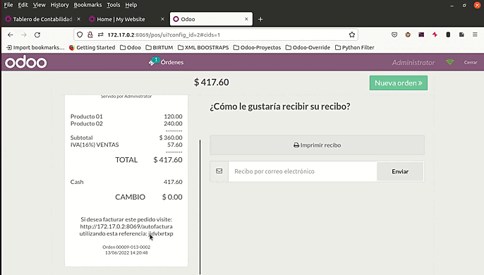

Adding PoS reference
On the top left side of the website the Fast Invoicing menu brings a search box which look for the PoS reference that is added in it. It gets the order associated with the PoS order. Down below it is described the process required to follow to invoice an existing order.
Generating a PoS order reference to search it on the website page

Generate self-invoicing